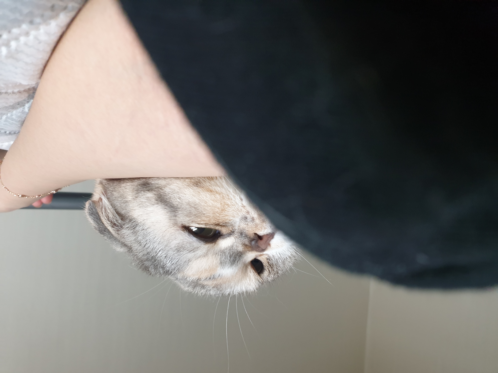

보충설명

하지만 옥상에 빨래를 말리러 가거나 할 때는 쪼르륵 몰래 따라와서 나와있곤 합니다 요즘 날씨가 너무 추워서 바깥은 잘 데리고 나가지 않지만 우다다를 너무 자주 해서 집사의 꿈나라를 방해하는 경우엔 종종 힐링 하라고 옥상을 데리고 나간답니다 물론 가슴 줄 필수이죠 날아다니는 벌레들도 보고 집안에서 들리지 않는 다양한 소리들도 듣고 자외선도 조금 쬐어 주고, 너무 오래 있는 건 아니랍니다 너무 길어도 물먹을 때 목도리가 젖어버리고, 너무 짧으면 숨 막히니까 제 생각에 제일 적당하다고 생각한 걸로 해주었네요 다하는데 시간은 별로 안 걸렸어요 간단하게 뜨개질만 할 수 있으면 만들 수 있답니다